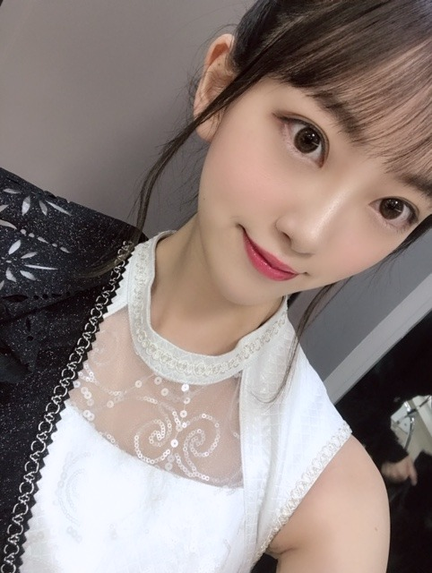
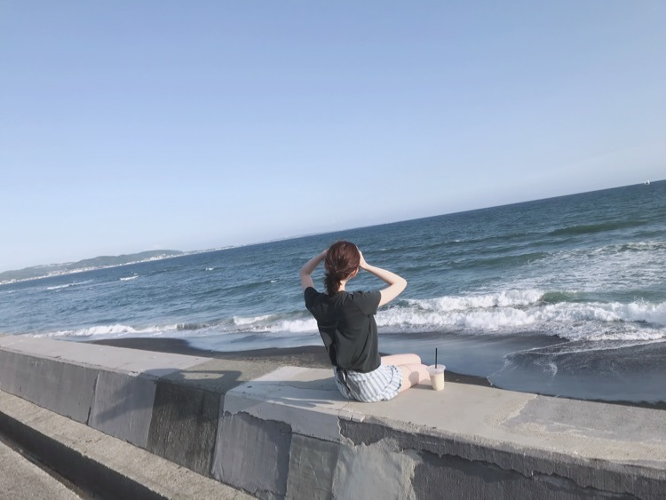

2019/0713Sat辛党になりつつある
こんばんは☺︎
音楽の日、生放送中ですね
既に2曲披露させていただきましたが、まだ出ます
見ててね〜✨✨
楽屋でもみり愛と絢音と横並びになってお菓子を食べながらみり愛が買ってくれたarを読みながら、生放送観てました！楽しい！お菓子美味しい！一袋あけたら食べ切る癖直したい！
歌番組の特番って夏〜って感じしますよね

ポニーテールはまってます！
そういえば、さいきんニキビができまして...
ニキビなのかな？ ぷつっと3つできちゃって...
皮膚科に行く時間ができたら駆け込まなきゃ...

しょんぼりモードです
天気もまだ夏！って感じじゃないし早くカラッと晴れた耳をすませばの雫が図書館に行くときくらいのかんかん照りになってほしいな...
最近感じたこと
私は、やっぱり、自分を周りを信じて前を向き続けなきゃいけない人間だなって改めて思いました
クヨクヨしててもなーんにもうまれないし
むしろダメになっていってる気がするし
うまくいくことが全てじゃなくて 立ち止まって気づけることもたくさんあるなって
強い人は、弱音も希望もはっきり言える人だと思ってます
私なりにぶつかりながら前へ進んでいけたらいいな...
あ！
そうだ、夏の全国ツアーの際に発売されているN46MODEみてくださいましたか？
私はショートパンツ特集で海で撮影をしました☺︎

#彼女の未央奈と海に来た に使ってね！

普段、海か古民家での撮影が多くてそんなイメージなのかな？たしかに海はすき！海鮮美味しいし地球って世界って広いなあって思えるし
大アサリ食べたい
いつか海がきこえるをテーマにしたグラビア撮影とかしてみたいな〜〜

メンバーといる時間、笑ってる時間が何よりも楽しいな〜✨この時間を大事にします！
では☺︎
コメント(326)
そして、この後も頑張ってね！
休めるときに仮眠だね！
しょんぼりしてる時には元気付けたいな？
体調に気を付けて！
明日も仕事だから程ほどに視聴します。
録画だね！しゃーないΣ(ﾟДﾟ)
んじゃね～！Σ⊂(ﾟДﾟ )
どんな髪型でもカワイイなー
体に気をつけて、頑張ってな。
音楽の日見てるよ(^^)
インフルエンサー久しぶりの衣装だったね(^^)
深夜遅くまで頑張ってね
未央ちゃん可愛い
斉藤貴巳
俺：み〜おな！(水をかける)
み：キャー！やったなー！！
2人：アハハッ！アハハッ！！
そして見つめ合う2人
顔と顔が近づいてゆく
目を閉じるみおな
俺：みおな。。。
ニキビできた？
カァーーーット！！！終
みたいになっちゃうから
ニキビちゃんと治してねー
てか、堀ちゃん何か悩んでる？
今はゆっくりでもいいから自分の速度で
少しずつ前に進んでいけばいいんじゃない
辛い時もあるかもだけど
メンバーや家族もいるじゃん
こらえて
ＳｉｎｇＯｕｔ！は、ＭＶの衣装とは
うって変わって、みんな揃いの衣装で
スイスの民族衣装風にシックな色合い
が涼し気でした。
インフルエンサーは３期が沢山入って
随分印象が変わりましたね。何だか
洗練されて、粗削りなところが無くな
った感じがしました。
テーマが汗だったみたいで、熱いライ
ブをこなしてる乃木坂には相応しいで
すね。
しょんぼりモードも可愛いね。
確かにクヨクヨしてても仕方ない。
それでなにも解決しないなら、その時
間が勿体ないもんね。
乃木坂ちゃん達が楽しく居られること
が、我々応援して身にとっては、何よ
り嬉しいことです。
どんなお酒よく飲むか気になる！
昨日二度めのホットギミックを友達誘って観に行きました。
1回目はストーリーを理解するのに精一杯だったけど2回目は登場人物の気持ちとか考えながら観れて楽しかった！
素敵な作品の主演やってるって本当にすごいなって思う！
そういえばみり愛さんもポニーテールでしたよね
今日ポニーテールの方が多いのは夏だからでしょうか？？踊ってる時にハネる髪が可愛くて好きです✨
残りの時間も頑張ってください✨
音楽の日頑張って(^O^)!
俺は昼寝と、用事で見事に乃木坂ちゃん見れなかった……
本当にごめん(´･ω･`)
でも乃木坂ちゃんが大好きなのは変わらないから！！笑
本当にメンバー同士の仲の良さ羨ましいし、素晴らしい事だなって思うよ(* ॑꒳ ॑*)
仲が良くて可愛い乃木坂ちゃん大好き♪
Ｎmodeのオフショットありがとう♪早速使うね笑
福岡で早くみおちゃんに会いたい ❤
待ってます\(๑´ω`๑)/
福岡のトゥモロー⊿
これからやるのはもちろん見るよ！
頑張って！！
バイトだったから音楽の日、まだ観れてないけど、ちゃんと録画してるから観るね！
早く、梅雨明けてほしいよね～。同じ暑いのだったら、梅雨のジメジメした暑さじゃなくて、夏のカラッとした暑さの方がいい！笑
弱音を吐けるのも強さっていう未央奈の考え好き。ぶつかりながらジメジメした暑さもニキビも吹っ飛ばしていこう！笑
これからも応援してるよ♪
体調には気おつけて
仕事頑張ってね
大好き❤
可愛い写真ばっかりで最高です！♡#彼女の未央奈と海に来た 沢山の人が使っていてTwitterが可愛さに浄化されてますよ〜︎☺︎N46MODEのショーパン未央奈ちゃん可愛すぎて何度も見返してます︎☺︎
音楽の日も3曲とも表情がガラリと違っていて最高でした！次の出番も楽しみだな〜
可愛さはもちろん、考えや思いを伝えてくれるから未央奈ちゃんのブログ本当に好きです。前を向いて思いを言葉にする姿勢、尊敬してます。弱音も言える人が強い人っていう言葉に、強がりと強い人は違うな〜って胸にズキっときました。
ニキビ早く治りますように。この後も音楽の日頑張ってください！
僕も辛いのは好きだから未央奈と話が合いそうな気がする〜
今はツアー関係で忙しいとは思うけど、無理はせんといてね！
何が披露されるか楽しみにしてるね！
チャァオ～～!☆彡
みおちゃん、こんばんは～～⤴️⤴️❕❤️❤️❤️❤️❤️笑顔
ごめん、みおちゃん❕❤️❤️❤️❤️❤️笑顔
音楽の日❕・・・
インフルエンサーから見られました❕❤️❤️❤️❤️❤️
土曜日も仕事だけど～～⤴️⤴️
いつも土曜日は17時過ぎには家に帰れる予定がぁ～～⤴️⤴️・・・
15:30にパソコンで先のスケジュールを確認していたら
パソコンの画面と支持書が1ヶ所抜けているのを発見❕(焦り)
再度事務に確認してぇやはり抜けていたので、こっちらで画面に入力❕笑顔
ついでにその後に、事務員の人が再チェック！
そして、いきなり・・・恐怖がやってきた❕
事務員:「お客様のお知らせ通知が1件確認できない～～⤴️⤴️！？」
それも週明け行うお仕事だから、皆で焦りまくり
あわてて自分のパソコンで調べても確認できず
おいらは、言った❕笑顔・・
「オーナーさん(お客様)に電話確認して、当日駄目なら、後日にまわすのはどうですかぁ～！？」って話して
その数分後
やはり、事務のメンバーがやってない事がわかった❕
その時間～事務員以外、みんな外に出ているのでぇ
おいらは、車でお客様のところへ！
1キロ走って、渋滞中用紙に再度目を通したら
間違いをまた発見！・・・即会社へ電話❕
事務員:「打ちなお直すから、戻ってきてぇ～～～～～⤴️⤴️！」(オイオイ)
そして途中道路で受け渡されて、再びお客様のところへ！
その後は無事終了し、行きと同じく帰りも高速道路でぇ❕
・・・がぁ、高速めっちゃ渋滞！
ほとんど時速20キロで走って帰ってきました❕❤️❤️❤️❤️❤️笑顔
みおちゃん、音楽の日なのに・・
早く帰れなくて、すみませんでした❕❤️❤️❤️❤️❤️笑顔
どうかぁこの後も仕事頑張ってねぇ❕❤️❤️❤️❤️❤️笑顔
またねぇ❕❤️❤️❤️❤️❤️笑顔
☆大人しい、おすまし！より☆彡
未央奈が大好きだよ
未央奈のポニーテール好き！すっごく似合ってると思うの！！
わたしも未央奈に影響されて最近ポニーテールなんだー
未央奈はわたしのインフルエンサーだよ！
もぴたんより
耳をすませばの例え最高！言葉のセンスも最高！
これからもずっとずっと応援してます！
俺の乃木坂46ライブ京セラドーム参加までアト32日。
7月28日の個握行くからよろしく！楽しみにしてる
早く皮膚科に行けるといいね
音楽の日2部も楽しみにしてるよ！
音楽の日！お疲れ様です！！
まだまだ、楽しみにしてますよ～！！
にきび？気にならないよ～
いつものかわいい堀ちゃんです！笑
お手入れ頑張ってね～
海未央奈…いい！！
しっかり使わせて頂きやす！！
いい写真です！
自分も堀ちゃんのように
クヨクヨしないで、前向いて
頑張っていきます！！
これからのお仕事もがんばれ！！
それでは！
次回の更新も楽しみにしてますよ～！！
体調1番で！！
おやすみおな～！！！
ニキビができたって。３つも。
間違いないッス。それは、ファンからの思われニキビ。想い、想われ、チョメ、チョメメ。
なんつって、 じゃぁ。
音楽の日見たよ！singoutとインフルエンサーよかったよ！singoutの衣装好き(人´ з`*)♪
あと、堀ちゃんのポニーテール可愛いかったよー
同じくニキビみたいなのできてしょんぼりモードです笑
うちも海鮮好きよー
ショーパン似合うね。 衣装も可愛い！
今月のarよかったよ～ 個人的に今回の堀ちゃんのメイク好きなんだよね！
応援してます～あと音楽の日楽しみ。
またね
自分の地元が海の町だから、写真見た時にあ！俺の地元か⁈って一瞬思ったけども違ってたよ笑笑
未央奈が海辺で居る写真を見ると、彼氏目線で見ちゃうよね^_^
ホントにいい写真をありがとうだね（＾ν＾）
テレビ出演ばかりで疲れているのにブログ更新ありがとう。
一期生が卒業してばかりでインフルエンサーがものすごく寂しく感じました。でも二期生や三期生のメンバーが一生懸命頑張っている姿を見て、頼もしいなぁと思ったし、いろんな想いを背負っているんだなと感じました。
この後も、また乃木坂が見れる事が本当に幸せです。ありがとう。無理しないで、ゆっくり休んでくださいね。
未央奈さんのポニーテールにはもうやられまくりです！
一番似合ってるよ。
ブログ更新ありがとう～
ストイックなほりっぴ～がめっちゃ好きだよ
ポニーテールのほりっぴ～も好き
帰ってから音楽の日見るね
3回目のホットギミックの感想は後でね
癒されるぅぅ！！
音楽の日で披露したインフルエンサー・Sing Out！とても良かったよ。久し振りにインフルエンサー観たけどダンス圧巻だったよ。来週から福岡公演が始まり大変だけど体調に気をつけて頑張ってね。
御疲れ様でした！
可愛いです！
何時も頑張って下さい！
常に必ずしても応援しています！
どうか御身体に気を付けて下さい！
ずっと大好き！
今晩は!未央奈ちゃんブログ更新ありがとうございます!
今録画してますよ!
未だ未だ暑い日が此れから続きますけれども、身体には気を付けてツアーを楽しんで下さい!
それではお休みなさい!
音楽の日、第一部お疲れ様でした
楽屋でのひと時、楽しそうですね(^_^)
横から見たポニーテール姿
どんな感じかな～
見てみたいなf(^_^)
あさってが海の日と言われても
実感わきませんね
そろそろ晴れてほしいです
前向きな未央奈さん
大好きです！
ポジティブにいきましょう＼(^_^)／
彼女の未央奈と海に来た
是非、使わせて頂きます
未央奈さんは妄想彼女でーす 笑
海のイメージにピッタリですよ
古民家は、お姫さまイメージとの
ギャップがいい感じです
メンバーさんと
たくさん笑って笑って
ファイト！
今日、ホットギミック3回目観に行って来ました！
TVでも堀ちゃんが観れて幸せな一日でした！
堀ちゃん、大好きだよー
タイムスケジュールを確認すると、第二部も出演されるのですね。とても楽しみです。
ニキビあんまり写真では分からないですけど…
お仕事も忙しいので、お肌のケアも大変ですね。
早くよくなりますよう…
未央奈ちゃんの前向きな気持ちに自分も励まされます。自分にしか分からない深い悩み、考え事あるかと思いますが、未央奈ちゃんはきっと大丈夫だと思います。根拠はありませんが、きっとこれからも大丈夫だと思います。
音楽の日、第二部楽しみながらまた見たいと思います。それではまた
お疲れ様です
体調管理に気をつけて頑張って下さい☺
京都の個握楽しかったです！ありがとう〜！
音楽の日あとでみまーす！
握手会ですこぶる悪そうだったので心配です。
未央奈のポニーテール僕も好きです！
名古屋のライブでポニーテールやってくれてありがとう！
ファンもメンバーも家族もみんながいる！みんながほりちゃんを応援してるぞ
がんばってな！
好き度が増すよおお♡♡
音楽の日見たよ！
みおな可愛いいいい☺︎♡
2曲良かったよー。
みり愛と絢音と一緒で仲よさそうだね。楽屋も楽しそうで良かった良かった。
未央奈ってポニーテール似合うよね。今日もすごく美人さんだよ。
ニキビできたんだね。僕はニキビあんまり気にしないけど、未央奈は肌が綺麗だから大変そう。
最近天気悪いし早く夏らしい天気になって欲しいよね。空が青いと気持ちも夏って感じになるし。
最近感じたこと伝えてくれてありがとう。
どういう経緯があったのかわからないけど、未央奈がそういう風に思ったこと、未央奈らしくて素敵だと思う。僕はどんな時も応援してるよ。
N46MODE買ったよ！ショートパンツと海って夏っぽくて良いよね。本当に未央奈が彼女だったらいいのになー。笑顔のページが多いのもすごく良かった！笑顔の未央奈大好き！
メンバーといる時間、笑ってる時間を大事にね！
では！
人間、みんな毎日自分なりに一生懸命生きている。けれども、毎日のように、上手く行かないことが起きたり、失敗したり、間違ったりする。
ということは、そもそも、上手く行かないこととか、失敗とか間違いって、人間の本質だと思うの。
そうであれば、そういう状況が起きることについては、人として自然なことなのだから、あらかじめOKを出しても良いのではないかと思う（より良いものを目指すことを否定する意味ではないのだけれど、修正は次回でいい）。
結果がどうなろうが、自分の頭で考えて「これだ」と思ったことをやれば、それでいいのでは。自分の人生の責任って、他人は取ってくれない（取れない）ものだし。
話は変わるけど、あの有名な方が使った言葉で「これでいいのだ」という言葉。真意は分からないけど、この言葉って、究極の言葉だとも思う。


時間があるとき皮膚科に行って、一刻でも早く
直した方が断然綺麗なお顔が台無しになってしまうぞ笑
楽屋で雑誌見ながらお菓子ってくつろいでますね
第一部お疲れ！二部もファイト